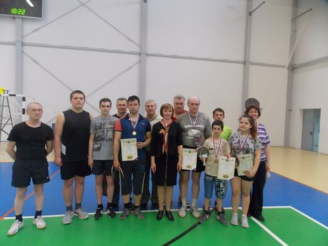
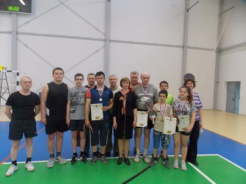
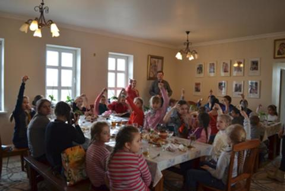
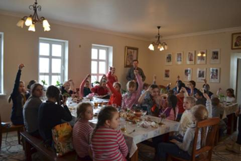

День дублера в администрации МР «Тарусский район»
21 апреля - вторник. Казалось бы, вполне обычный будний день. Вот только для учащихся городских школ он стал особенным. Ранним утром они поспешили не в родную школу, а в районную администрацию. Повод тому был веским – ставший традиционным День дублера, приуроченный ко Дню местного самоуправления. Многие из ребят принимают участие в таком мероприятии не первый раз. Ежегодно с нетерпением ждут столь ответственного дня – ведь для них это нескончаемый поток новых эмоций, впечатлений и, конечно же, идей. Дублировали руководящих лиц района администрации 11 учащихся городских школ, ребята талантливые, активные, предприимчивые и инициативные.
Непрерывные звонки, заваленный бумагами стол, очереди на приём — так и проходит типичный день муниципального служащего. Мы видим их работу только со стороны и не всегда по достоинству можем оценить их труд. В рамках прошедшего мероприятия школьникам выпала возможность посмотреть на работу муниципалов изнутри. Пока сам не окунешься во все вопросы, стоящие перед сотрудниками администрации, не почувствуешь всю тяжесть столь важной работы.


День дублера начался с утренней планерки, на которой ребята смущенно рассказывали о своих предпочтениях, жизненных ориентирах и о том, почему же их выбор пал на тот или иной отдел. Времени на посиделки и разговоры не было – ведь, как известно, рабочий день главы администрации района, его заместителей и начальников отделов расписан по минутам. В этом, пожалуй, все ребята убедились на собственном опыте.
В течение дня молодые люди не только знакомились с кругом обязанностей руководителей и специалистов администрации района, но и решали непосредственные вопросы, связанные с деятельностью по дублируемому направлению. Дублёром главы администрации района стала Дарья Васильева, учащаяся 11 класса ТСОШ №2 имени В.З. Власова, а её заместителем по общим вопросам выступила Юлия Дружинина из 9 класса ТСОШ №1 имени М.Г. Ефремова. Должности им достались уж точно не из легких. Девушки очень волновались и переживали. Перед ними открылся обширный круг полномочий и обязанностей, а вместе с ним на плечи легла колоссальная ответственность за каждое принятое решение. После планерки они сразу же отправились в кабинет Игоря Николаевича Караулова. Заместитель главы районной администрации очень тепло встретил своих дублеров, Кратко рассказал о своей работе и выслушал очень интересные и полезные идеи представителей активной молодежи района. Девушки по очереди поднимали столь актуальные на сегодняшний день проблемы района, например, отсутствие или ненадлежащее состояние детских площадок. Приятно было видеть огонек в их глазах – они не молчат о том, что их беспокоит, озвучивают и главное – предпринимают попытки решения острого вопроса.


После насыщенного рабочего дня – подведение итогов. Многие приобрели практические навыки работы в органах местного самоуправления, а некоторые получили еще и более чёткие ориентиры для своей будущей профессиональной деятельности. И руководителям отделов администрации, и их дублерам была предоставлена возможность высказаться. Все оценили работу ребят на хорошем уровне. Дублеры в свою очередь также поделились впечатлениями.
Юлия Дружинина, дублер заместителя главы районной администрации:
Я выбрала должность заместителя главы администрации по общим вопросам неспроста. Мой выбор пал на эту должность, потому что я не смогла определиться в какой именно сфере хочу себя попробовать. Решила узнать обо всем понемногу. После встречи с заместителем главы районной администрации И.Н. Карауловым я пришла к выводу, что работа у заместителя конечно интересная, но очень трудная. Для себя я решила, что эта сфера деятельности мне не совсем подходит.
Дарья Васильева, дублер главы районной администрации:
Я выбрала пост главы администрации МР «Тарусский район», потому что хотела узнать и увидеть всю эту структуру в общем. Было интересно понять для себя, что же я как простой гражданин, могу сделать для своего района. Я считаю, что опыт, полученный на встрече с заместителем главы, пригодится в дальнейшем. Игорь Николаевич показал нам, что всё в этой жизни не так просто. У каждого человека много своих желаний и планов, но чтобы их реализовать, нужно провести огромную работу с четко выстроенным алгоритмом действий.
«Мероприятие было очень интересным. В школе день дублера - это одно, тебе интересно, но ты представляешь работу учителя, а здесь абсолютно незнакомая деятельность, которую необходимо постичь за столь короткий срок. Я выбрала архитектуру, потому что раньше хотела связать с этим жизнь. Работа, мне кажется, тяжелая, потому что важна точность, внимательность и усидчивость. Мне очень много рассказали о профессии, показали, как записывается все нюансы, чертятся и оформляются. Коллектив очень милый и отзывчивый, всегда подскажут и дадут полезный совет. Но самая интересная часть была, когда мы с ребятами обдумывали итоговые проекты. Это было похоже на «накидывание идей» на смене РСМ - так же уютно и дружелюбно» - рассказала Анастасия Позднякова — дублер начальника отдела ведения кадастра, землеустроительной и градостроительной документации.
Воодушевленно рассказывали о проведенном дне дублеры туристско-информационного центра Надежда Коваленко и Екатерина Кудрявова. Они не просто познакомились с основными направлениями работы центра, но и придумали интересный, яркий проект, который планируется реализовать на традиционном и всеми любимом фестивале «Петухи и гуси» - конкурс костюмов «Тарусская горошина». В конкурсе смогут принять участие все желающие, люди разных возрастов, профессионалы своего дела и просто любители делать креативные и запоминающиеся наряды.
В своем выступлении исполняющий обязанности главы администрации поблагодарил всех за работу и подчеркнул возможность дальнейшего взаимодействия администрации с участниками данного проекта в рамках «Школьного совета при главе администрации». Сами же участники были очень воодушевлены и признались, что хотели бы после окончания ими высших учебных заведений вернуться на работу в администрацию района и трудиться на благо Тарусского района.
Статья, фото - Д. Иванова

 



 



{kind=link}
{kind=link}
{kind=link}
{kind=link}
{kind=link}
{kind=link}
{kind=link}
{kind=link}
{kind=link}